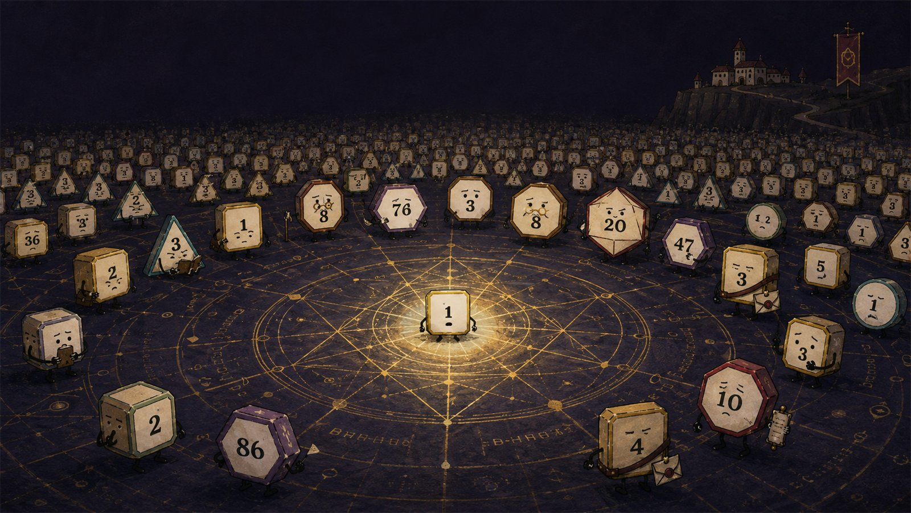
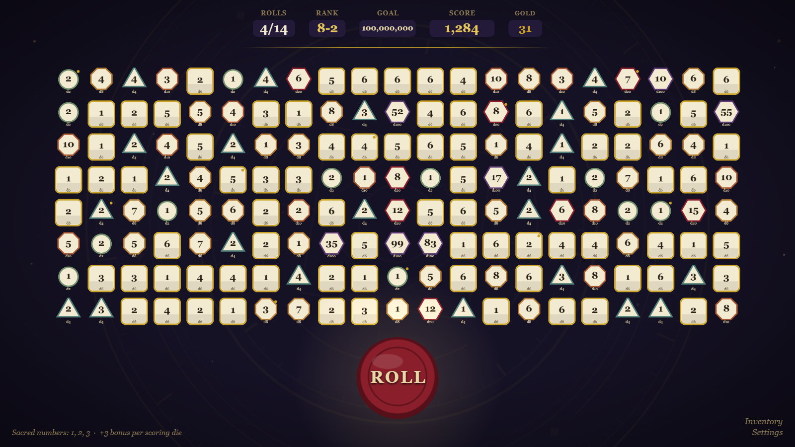
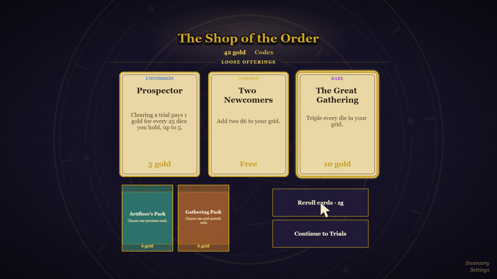
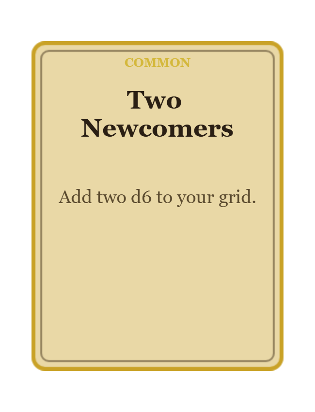
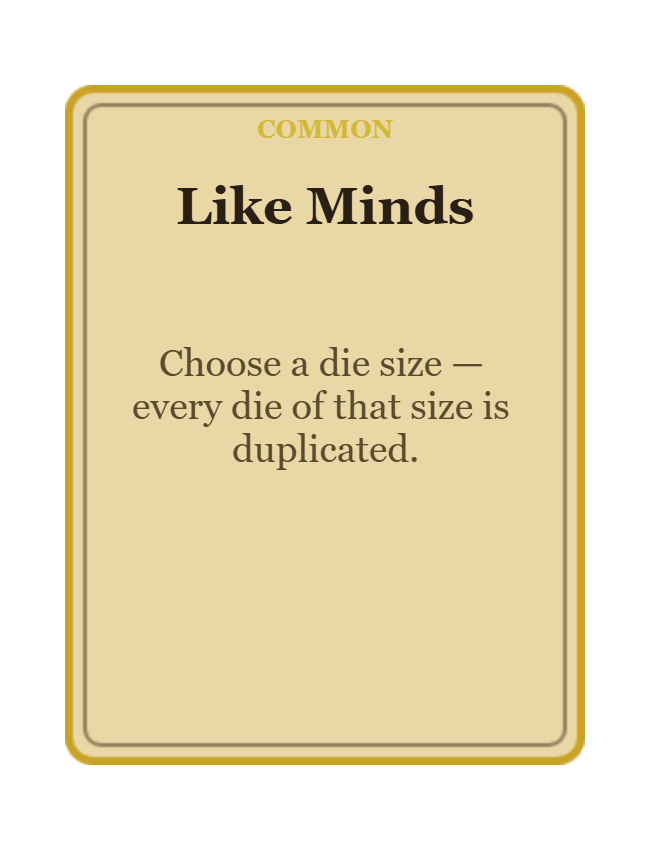
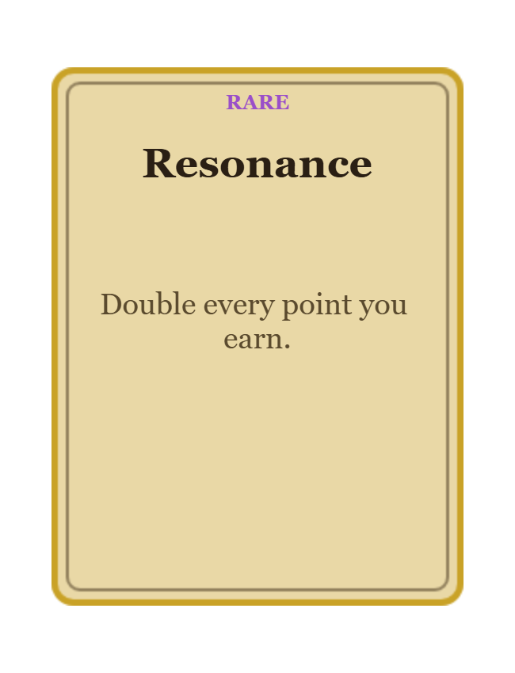
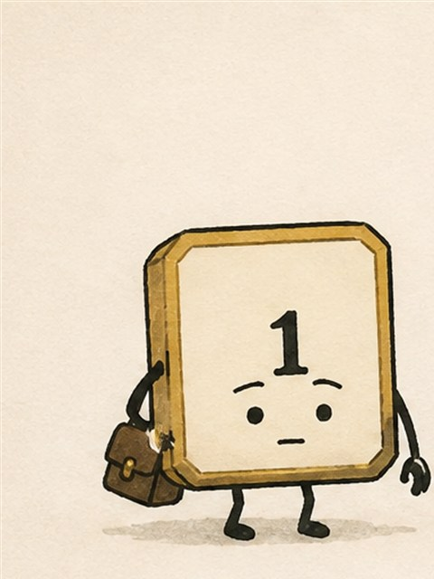
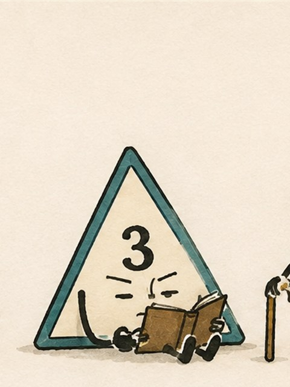
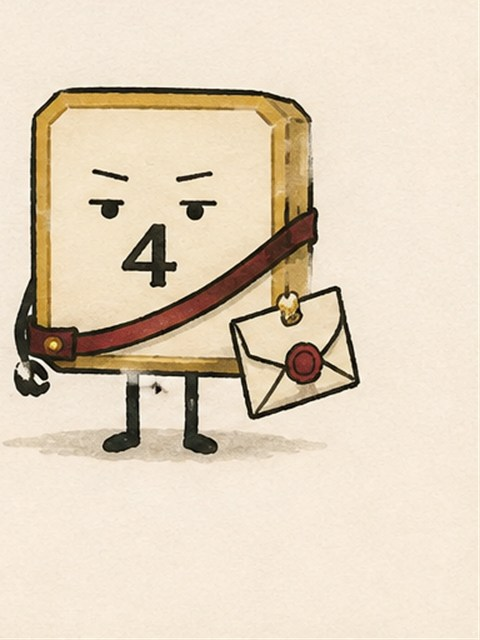

I
Teach them to settle
Roll sacred scoring numbers to meet each Trial’s goal. At first, only ones understand the assignment.

A dice-building roguelike
A sacred discipline. An unreasonable number of dice.
Start with one d6. Buy rule-changing cards, build impossible scoring combinations, and climb ten ranks of increasingly unreasonable Trials.
Free open beta · Mouse or touchscreen · No account required
Make chance obey
Start with one die, and only 1s score. Between Trials, buy cards that add dice, unlock new scoring faces, reshape the grid, and compound the whole roll. By the final ranks, one click can send an entire congregation into motion.

The founding miracle
Then one came to rest. It held one face, one thought, one mind, for nearly three miraculous seconds. That day, The Order of Order was founded to spread the miracle.
Questionable doctrine
Make new faces score. Shrink dice toward certainty. Duplicate whole die sizes. Build feedback loops that turn one fortunate result into a congregation.




The approved curriculum
I
Roll sacred scoring numbers to meet each Trial’s goal. At first, only ones understand the assignment.
II
Add dice, rewrite scoring rules, and assemble combinations that turn a quiet roll into an avalanche.
III
Clear Lesser, Greater, and Boss Trials. The curriculum is not designed around your comfort.
Distinguished members
Literacy is helpful. Remaining still is mandatory.



Advanced instruction
Each rank announces its objection in advance. You may prepare a response. It will not be graded kindly.
Your multiplier is halved. Enlightenment continues at a reduced rate.
No dice are added this Trial. Please work with the congregation provided.
A tenth of your dice score nothing. Their absence has been recorded.
Outside interests
Settled dice hold meetings. Roads run straight. Fields are planted on schedule. Consensus, once discovered, has proved alarmingly practical.
“The Crown congratulates the Order on its recent growth and looks forward to discussing a modest, permanent contribution.” Office of His Majesty’s Accounts
Enrollment is open
Teach them better.
Play Free in Browser Free open beta · About 15–20 minutes for a full run